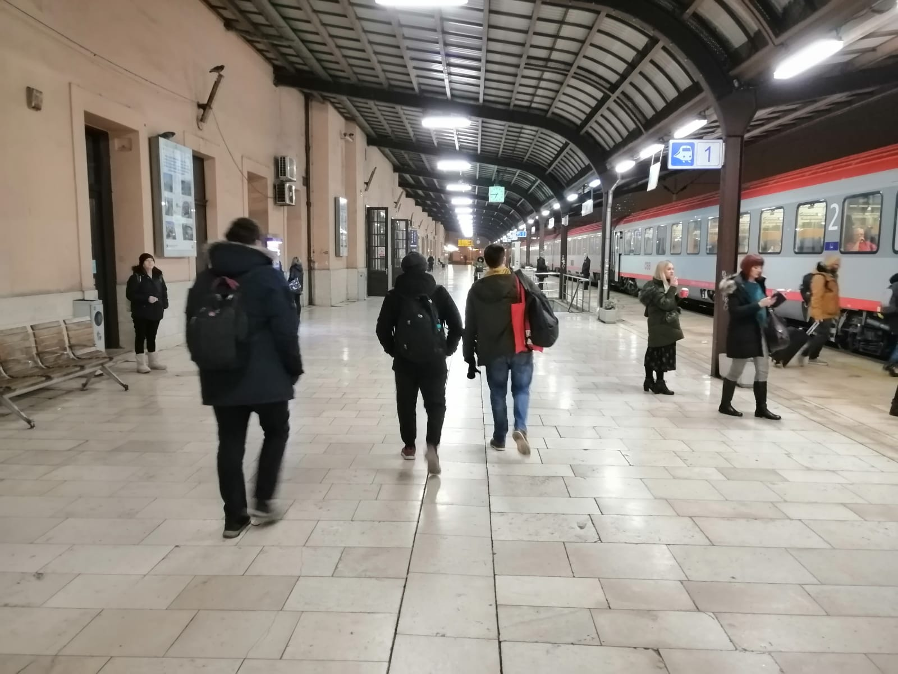

Novi semestar, novo putovanje

Najbolja relaksacija nakon napornih ispita je odmak od svega. Slijedom toga, putovanje
nije loša opcija. Odlazak s nekoliko prijatelja vlakom na
Bled
i druženje u kupeu s prekrasnim
pogledom i rutom koja prati gornji tok rijeke Save ne zvuče kao loša opcija.
Autobusna i/ili černboilska katastrofa

Putovanje dugo 39h zvuči zanimljivo. Većina bi zaključila da je putnik zastao u nekom hotelu/hostelu i odspavao jednu noć, ali ne ovaj put.
Putovati autobusom 39h od Zagreba do crnomrskog ukrajinskog grada Odesse preko Krakova i Kijeva tek s nešto više od jednog sata slobodnog vremena između presjedanja.
......
Černobil - nuklearna katastrofa.
Prva pomisao koja mnogima padne na pamet na spomen naziva tog grada.
......
Berlin - u malom ???
Berlin, grad berlinera. Krafna ili ljudi?
Poznata izjava američkog predsjednika "Ich bin ein Berliner" Kennedyja.
Iako postoje razni poznati muzeji u Berlinu, svakako preporuka Little Big City. Povijest berlina prikazana u maketama koje su povezane raznim mehanizmima
koji im omogućuju razne efektre, kretanje figurica, vatromet itd... Interaktivno i ono što je u drugim muzejima zabranjeno, ovdje je dozvoljeno na puno mjesta, a
to je igranje s predmetima.